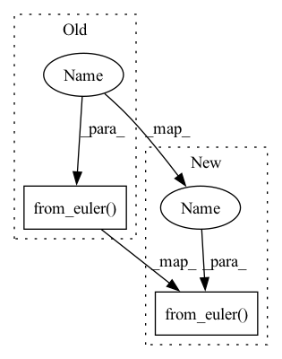

Pattern ID :27075

Before Change
assert_allclose(angles, Rotation.from_euler(seq, angles).as_euler(seq))
// Intrinsic rotations
seq = seq.upper()
assert_allclose(angles, Rotation.from_euler(seq, angles).as_euler(seq))
def test_as_euler_symmetric_axes():
After Change
// Intrinsic rotations
seq = seq.upper()
rotation = Rotation.from_euler(seq, angles)
angles_quat = rotation.as_euler(seq)
angles_mat = rotation._as_euler_from_matrix(seq)
assert_allclose(angles, angles_quat, atol=0, rtol=1e-12)
assert_allclose(angles, angles_mat, atol=0, rtol=1e-12)
In pattern: SUPERPATTERN
Frequency: 3
Non-data size: 2
Instances
Fragment ID: 80604301
Project Name: scipy/scipy
Commit Name: 316159b15927f5c4eaef6b1092464c7266bea489
Time: 2022-12-07
Author: 15084103+evbernardes@users.noreply.github.com
File Name: scipy/spatial/transform/tests/test_rotation.py
M Class Name: AnonimousClass
N Class Name: AnonimousClass
M Method Name: test_as_euler_asymmetric_axes(0)
N Method Name: test_as_euler_asymmetric_axes(0)
M Parent Class:
N Parent Class:
M File Name: scipy/spatial/transform/tests/test_rotation.py
N File Name: scipy/spatial/transform/tests/test_rotation.py
M Start Line: 580
M End Line: 594
N Start Line: 588
N End Line: 615
'>
Before Change
if self.angle:
angles = np.random.uniform(-self.angle, self.angle, size=6)
R1 = R.from_euler("zyx", angles[:3], degrees=True)
R2 = R.from_euler("zyx", angles[3:], degrees=True)
else:
R1 = np.diag((1,1,1))
R2 = np.diag((1,1,1))
After Change
if self.angle:
angles = np.random.uniform(-self.angle, self.angle, size=6)
R1 = R.from_euler("zyx", angles[:3], degrees=True).as_dcm()
R2 = R.from_euler("zyx", angles[3:], degrees=True).as_dcm()
else:
R1 = np.diag((1,1,1))
'>
Fragment ID: 80604303
Project Name: jwoo5/fairseq-signals
Commit Name: 94ddd7f3af4fdb088ead2378f5089edc75a5c9d7
Time: 2021-11-05
Author: ojw0123@korea.ac.kr
File Name: fairseq_signals/data/ecg/perturb_ecg_dataset.py
M Class Name: _3KGECGDataset
N Class Name: _3KGECGDataset
M Method Name: perturb(2)
N Method Name: perturb(2)
M Parent Class: PerturbECGDataset
N Parent Class: PerturbECGDataset
M File Name: fairseq_signals/data/ecg/perturb_ecg_dataset.py
N File Name: fairseq_signals/data/ecg/perturb_ecg_dataset.py
M Start Line: 125
M End Line: 186
N Start Line: 125
N End Line: 181
'>
Before Change
angles = np.empty((n, 3))
angles[:, 0] = rnd.uniform(low=-np.pi, high=np.pi, size=(n,))
angles[:, 1] = rnd.uniform(low=0, high=np.pi, size=(n,))
angles[:, 2] = rnd.uniform(low=-np.pi, high=np.pi, size=(n,))
for axis1 in ["x", "y", "z"]:
for axis2 in ["x", "y", "z"]:
if axis1 == axis2:
continue
// Extrinsic rotations
seq = axis1 + axis2 + axis1
assert_allclose(
angles, Rotation.from_euler(seq, angles).as_euler(seq))
// Intrinsic rotations
seq = seq.upper()
assert_allclose(
After Change
angles = np.empty((n, 3))
angles[:, 0] = rnd.uniform(low=-np.pi, high=np.pi, size=(n,))
angles[:, 1] = rnd.uniform(low=0, high=np.pi, size=(n,))
angles[:, 2] = rnd.uniform(low=-np.pi, high=np.pi, size=(n,))
for seq_tuple in permutations("xyz"):
// Extrinsic rotations
seq = "".join([seq_tuple[0], seq_tuple[1], seq_tuple[0]])
rotation = Rotation.from_euler(seq, angles)
angles_quat = rotation.as_euler(seq)
angles_mat = rotation._as_euler_from_matrix(seq)
assert_allclose(angles, angles_quat, atol=0, rtol=1e-13)
assert_allclose(angles, angles_mat, atol=0, rtol=1e-9)
'>
Fragment ID: 80604297
Project Name: scipy/scipy
Commit Name: 316159b15927f5c4eaef6b1092464c7266bea489
Time: 2022-12-07
Author: 15084103+evbernardes@users.noreply.github.com
File Name: scipy/spatial/transform/tests/test_rotation.py
M Class Name: AnonimousClass
N Class Name: AnonimousClass
M Method Name: test_as_euler_symmetric_axes(0)
N Method Name: test_as_euler_symmetric_axes(0)
M Parent Class:
N Parent Class:
M File Name: scipy/spatial/transform/tests/test_rotation.py
N File Name: scipy/spatial/transform/tests/test_rotation.py
M Start Line: 597
M End Line: 616
N Start Line: 626
N End Line: 653